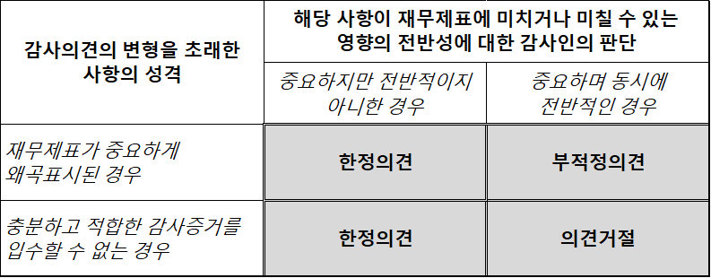

기업은 재화와 용역의 생산과 유통 등의 경제활동의 수행을 통해 영리 추구 등의 사업 목적을 달성하고자 하는 조직이다. 자유경제 체제에서 기업은 생산의 주체로서 핵심적인 기능과 역할을 담당하고 있다. 우리가 기업을 이해하기 위해서는 그 기업이 처한 국내외적 경영환경, 재무상태, 경영성과, 사업기회 및 위험 등을 체계적으로 분석하고 평가하는 것이 필요하다.
재무상태분석은 기업이 경제활동을 수행하는데 사용할 수 있는 경제적자원(economic resources)을 파악하고, 이를 취득하기 위해 조달한 자본의 종류와 금액, 자본을 제공한 투자자들의 권리 관계를 파악한다. 경영성과분석은 기업이 일정기간 동안 경영활동에서 생산한 산출물, 투입한 자원, 그리고 창출한 부가가치를 측정 및 평가한다. 부가가치(value added)는 경영활동의 결과인 산출물(output)의 가치가 투입물(input)의 가치를 초과하는 부분이다. 기업이 경영활동을 통해 창출한 가치는 기업에 자본을 제공한 투자자에게 궁극적으로 귀속된다. 자본시장에서 투자자는 재무분석을 통해 기업이 희소한 경제적자원을 얼마나 효율적으로 사용하는 지 평가하고 이를 토대로 효율적인 기업에 더 많은 자원을 배분한다.
투자자는 기업에 필요한 자본을 제공하고, 제공한 자본에 상응하는 권리를 취득한다. 투자자는 기업의 자산에 대한 청구권을 가지는데, 투자자금의 성격에 따라 투자자는 채권자(creditor)와 자기 자본을 제공한 지분 소유자(equity owner)로 나눌 수 있다. 채권자는 기업이 필요한 자금을 대출해준 금융회사, 기업이 발행한 회사채를 매입한 투자자, 영업관련 거래에서 신용을 제공한 공급자 등이 해당된다. 지분 소유자는 영업 결과에 대해 궁극적인 책임과 권한을 가지는 투자자로, 주식회사의 경우 주주가 기업의 소유자다.
기업의 채권자와 지분소유자는 기업이 필요한 자본을 제공한 것은 동일하지만 권리와 의무에서 차이가 난다. 채권자는 지분 소유자보다 기업 자산에 대해 우선적인 청구권을 가진다. 지분 소유자는 채권자에 비해 투자금의 회수와 관련해서 더 많은 위험에 노출되어 있다. 기업이 청산을 하는 경우 기업의 자산은 우선적으로 채권자의 채무를 변제하는 데 사용한다. 지분 소유자는 채무를 변제한 후 남아 있는 자산에 대한 권리만을 가진다. 따라서, 기업의 잔여재산이 충분하지 않는 경우 지분 소유자는 투자한 자금을 회수하지 못할 위험에 노출된다. 기업지분 소유자는 투자 위험을 감수하는 대신 경영활동이 성공적인 경우에는 투자 금액 대비 채권자보다 훨씬 큰 수익을 얻을 수 있다. 채권자는 지분 소유자에 비해 투자금을 회수하지 못할 위험에 덜 노출되는 대신 기업이 성공적이라도 계약에서 정한 이자수익 금액 이상을 청구하지 못하는 것이 일반적이다.
주식회사와 같이 주주의 책임이 투자한 금액에 한정되는 경우(“주주의 유한책임”)1에는 채권자의 권리를 보호하기 위한 여러가지 장치가 마련되어 있다. 예를 들면, 주주에 대한 배당은 경영활동에서 벌어 들인 이익에서만 가능하도록 하여 주주가 투자한 자본금에서는 배당을 할 수 없다. 영업의 악화로 기업이 채권자에게 약속한 기일에 이자와 원금을 지급하지 못하게 되면 채권자는 기업의 청산을 통해 투자금을 회수할 수 있다.
채권자는 재무분석을 통해 기업의 채무불이행 위험을 평가하고, 대출금의 규모, 대출 이자율, 담보 요구 등의 의사결정에 활용한다. 기업의 재무상태와 경영성과 평가는 기업의 소유자인 주주에게는 필수적이다. 주주는 채무를 상환한 후 남아 있는 잔여지분(residual interest)에 대한 권리를 보유하고 있으므로, 채권자 보다 더 큰 투자위험에 노출되어 있으므로 투자에 수반되는 투자위험을 면밀히 분석하는 것이 필요하다. 재무분석을 통해 감내하는 투자 위험을 상쇄하는 투자수익을 기대할 수 있는 지 판단하여야 한다.
기업이 경제활동에서 차지하는 비중이 커짐에 따라 채권자와 주주와 같은 청구권자 이외의 다양한 이해관계자 (stakeholders)의 관심사와 복리를 기업 의사결정에 반영하라는 요구가 늘고 있다. 예를 들면, 기업은 종업원이 인간다운 삶을 영위할 수 있는 수준의 보상을 제공하고 업무를 통해 성장 발전할 수 있는 기회를 제공하여야 한다. 또한, 기업은 공정 경쟁의 규범을 준수하고 윤리경영을 수행하여야 한다. 소비자 보호, 성실한 납세 의무의 이행, 사회적 약자에 대한 배려, 환경보호, 지역사회와 사회 전체의 발전에 기여하는 목표를 설정하여야 한다. 기업이 이윤 극대화만을 추구하는 과거의 근시안적인 기업경영 패러다임을 극복하는 것이 기업의 장기적인 존속과 성장에 필요하다.
1.1 재무제표
재무제표(財務諸表, Financial Statements)는 기업이 작성하고 기업 외부의 정보이용자 즉 일반에게 공개하는 기업 경영의 결과인 재무상태(financial position)와 재무성과(financial performance)에 관한 체계적인 보고서이다.
재무제표는 투자자(지분 투자자, 대여자, 기타 채권자뿐만 아니라 잠재적 투자자 포함)가 기업이 필요한 경제적 자원의 제공 관련 의사결정을 할 때 유용한 재무정보를 제공하는 것을 주된 목표로 한다. 재무제표는 현재 및 잠재적 투자자뿐만 아니라 기업의 종업원, 노조, 정부, 경쟁자에게 유용한 정보를 제공한다. 정부는 경제정책의 수립, 조세 부과 등의 목적으로, 경쟁자는 상대방의 수익성 평가 등을 통해 사업전략을 수립할 목적으로, 종업원은 기업이 충분한 보상을 제공할 능력이 있는지, 산업 경쟁력, 성장 가능성을 평가하는데 유용한 정보를 재무제표에서 얻을 수 있다.
기업 외부의 모든 정보이용자를 대상으로 제공하는 일반목적 재무제표(general purpose financial statements)는 재무제표 이용자가 필요로 하는 모든 정보를 제공하지 않으며, 실제로 제공할 수도 없다. 정보 이용자의 관점에서 합리적인 의사결정을 하기 위해서는 재무제표에서는 기본적인 재무 정보를 확보하고 다른 원천에서 추가로 정보를 입수하는 것이 필요하다. 현재 및 미래의 경제 상황, 산업 동향, 규제 및 경쟁자에 대한 정보, 신기술 동향 등이 경제적 의사결정에 유용한 추가 정보에 해당한다.
2011년부터 우리나라의 모든 상장기업과 금융기관은 국제회계기준인 IFRS(International Financial Reporting Standards)에 따라 재무제표를 작성한다. 전 세계의 많은 국가가 국제회계기준을 채택하였다. 예를 들면, 유럽연합 국가, 호주, 뉴질랜드는 2005년에 국제회계기준을 채택하였다. 캐나다는 한국과 마찬가지로 2011년에 국제회계기준을 채택하였다. 하지만, 미국, 일본, 인디아, 러시아 등은 아직 국제회계기준을 전면적으로 채택하지 않고 있다.
1.2 전체 재무제표
기업이 정기적으로 작성하여 일반에게 공표하는 전체 재무제표(a complete set of financial statements)는 다음과 같이 구성된다.
연간보고서의 경우 사업연도 말 기준, 즉 대부분의 우리나라 기업은 12월 말 일자로 기업의 자산, 부채, 자본에 관한 정보를 직전년도 말 정보와 더불어 재무상태표에 보고한다. 포괄손익계산서는 사업연도 동안, 즉, 1월 1일에서 12월 31일까지의 연간 경영 성과를 보고 하는데, 매출액, 영업이익, 법인세차감전이익, 당기순이익, 총포괄이익 등을 보고한다. 자본변동표에는 자기자본의 변동 상황을 보고하는데, 영업활동의 결과인 이익뿐만 아니라 주주와의 거래, 즉, 주식발행, 배당금 지급, 자기주식의 취득 등을 보고한다. 현금흐름표에서는 기업의 활동을 영업활동, 투자활동, 재무활동의 세 가지 항목으로 분류하고, 각 활동 항목별로 현금흐름(현금유입과 현금유출)에 관한 정보를 제공한다.
마지막으로, 주석사항(notes)은 재무제표의 필수적인 부분으로 전체 재무제표는 주석을 반드시 포함해야 한다. 주석사항은 재무제표 이용자가 재무제표 본문에 표시된 정보를 이해하는데 유용한 부가적인 정보를 제공한다. 기업이 재무보고 관련 채택한 회계정책, 특수관계인과의 거래, 보고일 이후에 발생한 중요 사항(예를 들면, 합병, 소송) 등 재무제표를 이해하는 데 유용한 정보가 많이 포함되어 있다.
실제로 전체 재무제표의 상당 부분이 주석사항으로 구성되어 있다. 예를 들면, 2021년 삼성전자가 금융감독원이 운영하는 전자공시시스템(DART)에 공시한 연결감사보고서는 총 131쪽인데, 주석이 116쪽을 차지한다 (13쪽에서 시작하여 거의 보고서 끝인 128쪽까지 계속된다). 주석 사항도 재무제표의 일부이므로, 어떤 기업의 재무제표를 분석하는 경우 반드시 전체 재무제표를 구하여 주석 사항도 함께 검토하여야 한다.
재무제표에는 당기의 금액뿐만 아니라 정보이용자가 비교를 할 수 있도록 전기의 정보도 함께 보고한다. 즉, 2021년 사업연도의 경우 재무상태표는 2021년과 2020년 사업연도 말의 재무상태를 비교형식으로 보고한다. 포괄손익계산서, 자본변동표, 현금흐름표도 마찬가지로 2021년과 2020년 사업연도를 비교형식으로 보고한다. 다만, 회계정책을 소급하여 적용하거나, 재무제표의 항목을 소급하여 재작성 또는 재분류한 경우 가장 이른 비교 기간의 기초 재무상태표도 보고한다. 이 경우에는 재무상태표는 당기와 전기 말뿐만 아니라 전기 초 시점의 재무상태표도 작성 공시한다.
1.3 재무제표의 작성과 인식 기준
재무제표는 발생기준 회계(accrual basis of accounting)를 기반으로 작성하는데, 현금흐름표는 예외적으로 다른 보고서(즉, 재무상태표, 포괄손익계산서, 자본변동표)와 달리 현금의 입출금에 초점을 맞추는 현금기준(cash basis)을 사용한다.
발생기준 회계는 현금의 입출금이 아니라 수익의 실현과 비용의 발생에 초점을 맞추는 거래의 인식과 재무보고의 기본 원칙이다. 예를 들면, 고객에게 미리 현금을 받고 납품은 6개월 이후에 하기로 약정한 “선수금” 거래의 경우, 고객에게서 현금을 받은 시점이 아닌 6개월 후 제품을 생산해서 고객에게 인도한 시점에 수익을 인식한다. 수익은 고객과의 계약에서 규정하고 있는 수행의무(performance obligation)를 수행한 때 수익을 인식한다. 즉, 제품을 고객에게 인도한 시점에 수익이 실현된다고 본다.
재무제표 정보이용자는 현금기준 회계정보를 발생기준 회계정보의 보조 자료로 활용하여 추가적으로 유용한 정보와 통찰력을 얻을 수 있다.
전체 재무제표의 구성과 관련하여 대부분의 우리나라 기업은 재무상태표를 다른 보고서에 앞서 제시한다. 하지만, 국제회계기준에는 재무제표의 순서에 관한 규정이 없다.
우리나라 기업은 관행적으로 재무상태표를 제일 먼저 보고하는데, 이에 대해서도 생각해 볼 필요가 있다. 외국기업의 경우 포괄 손익계산서를 다른 보고서보다 먼저 보고하는 경우가 많다. 어떤 경우에는 현금흐름표를 먼저 보고하기도 한다. 기업이 어떤 보고서를 먼저 보고하는지는 이러한 보고서가 재무제표 이용자에게 얼마나 유용한지 판단하여 경영자가 결정하면 된다. 물론 주석사항을 다른 보고서에 앞서 보고하는 것은 흐름으로 보면 문제가 있으므로 맨 마지막에 첨부하는 것이 논리적이다. 애플컴퓨터의 경우 포괄손익계산서, 대차대조표(재무상태표의 예전 이름으로 이를 여전히 사용하는 기업도 많다), 자본변동표, 현금흐름표, 주석사항의 순서로 재무제표가 구성되어 있다.
기업이 재무제표를 작성할 때는 기업이 한동안 존속한다는 계속기업(going concern)을 전제한다. 따라서, 재무제표를 작성할 때 계속기업으로서의 존속 가능성을 평가해야 하고, 존속 능력에 유의적인 의문을 제기할 수 있는 사건이나 상황과 관련된 중요한 불확실성이 있는 경우에는 그러한 사실을 공시하여야 하고, 재무제표가 작성된 기준을 공시하여야 한다. 기업의 청산이 임박해 있거나 경영활동을 중단할 의도가 있는 경우에는 청산가치나 순실현가치 등의 기준을 사용하여 재무제표를 작성한다.
1.4 재무보고기간
주식회사와 같은 기업은 일 년에 한 차례 이상 재무제표를 작성하여 이해관계자들이 자유로이 열람할 수 있도록 공시한다.
‘연간’ 재무제표의 경우 재무 보고기간이 12개월이고, ‘분기’ 재무제표의 경우 재무 보고기간이 3개월이다. 반기재무제표는 처음 6개월을 보고기간으로 한다. 회사에 따라서는 내부적으로 활용하기 위해 매월 재무제표를 작성하기도 한다. 우리나라 기업은 대부분 연간 보고기간을 정할 때, 달력과 마찬가지로 1월 1일에 시작해서 12월 31일로 종료하는 기간을 선택한다.
연간 보고기간을 사업연도(fiscal year)라고 하는데, 사업연도가 3월, 6월, 9월 말로 종료하는 경우도 있다. 외국 기업의 경우 사업연도를 월 말로 정하지 않고, 어떤 월의 특정한 요일로 정하는 경우가 있다. 예를 들면, 애플컴퓨터의 경우 사업연도의 종료일을 9월의 마지막 토요일로 정하고 있다. 애플컴퓨터의 2016년 사업연도는 9월 24일자로 종료하였다. 2015년 사업연도의 종료일은 9월 26일 이었으므로, 2016년 사업연도에는 52주가 포함되었다. 아마 짐작했겠지만 1년이 52주보다는 조금 길기 때문에 어떤 해에는 사업연도가 53주가 되기도 한다. 실제로 애플컴퓨터의 2017년 사업연도는 9월 30일로 끝나는 53주간이었다. 따라서, 애플컴퓨터의 경우 대부분의 사업연도가 52주로 구성되는데, 대략적으로 매 5년 또는 6년마다 사업연도가 1주가 늘어 53주가 된다.3
재무보고기간이 상이한 경우에는 재무성과를 평가할 때 기간의 차이를 조정하는 것이 필요하다. 예를 들면, 애플컴퓨터의 2017년과 2016년 매출액은 $229,234 백만과 $215,639 백만이었다. 단순 계산을 하면, 2017년 회계기간의 매출액 성장률이 6.3%가 되겠지만, 한 주간의 회계기간 차이를 감안하면 2017년 사업연도의 매출액 성장률은 4.3%가 된다.
어떤 기업은 사업연도 종료일을 변경하기도 한다. 사업연도 종료일을 변경하는 이유는 여러 가지가 있는데, 예를 들면, 연결재무제표 작성에 포함되는 계열사 간 사업연도를 일치시키기 위해 또는 동종 산업의 다른 회사와 사업연도를 맞추기 위해서 사업연도 종료일을 변경한다. 만일 사업연도를 3월에서 12월로 변경한다면, 사업연도를 변경한 해에는 재무보고기간이 9개월이 된다. 이런 경우에는 앞서 애플컴퓨터의 경우처럼 변경 연도의 영업 결과를 전년도와 비교할 때는 보고기간의 차이를 조정하여야 한다.
1.5 연결재무제표와 비연결재무제표
삼성전자와 애플컴퓨터는 ’연결’재무제표를 작성하여 보고한다.
연결재무제표는 종속회사가 있는 경우에 지배회사(모회사라고도 하는데, 삼성전자나 애플컴퓨터)가 작성하는 재무제표이다. 지배회사는 의결권의 확보를 통해 종속회사(subsidiary)의 영업정책과 재무정책을 직접적으로 결정할 수 있는 통제력(control)을 확보하였으므로, 지배회사와 종속회사는 영업과 재무적으로 서로 밀접하게 연결되어 있다. 지배회사의 입장에서 법률상 독립적인 종속회사를 거느리는 것과 회사 내에 별도의 독립적인 사업부문을 두는 것은 실질에서 차이가 없으므로, 지배회사와 종속회사를 함께 묶어서 재무보고를 하는 것이 타당하다.
국제회계기준(IFRS)과 미국회계기준(US GAAP)에서는 종속회사를 거느린 기업은 연결재무제표를 작성하도록 하고 있다. 우리나라 기업의 경우 종속회사가 있는 경우 “연결”재무제표와 “비연결”재무제표 (“별도”재무제표 또는 단순히 재무제표로 지칭됨)를 함께 작성한다.4
국제회계기준을 도입하기 전에도 연결재무제표를 작성하였지만, 한 달 늦게 지연 공시되는 등의 이유로 연결재무제표가 주된 재무제표의 역할을 제대로 수행하지 못하였다. 국제회계기준의 도입으로 연결재무제표가 명실상부한 주된 재무제표의 지위를 차지하게 되었다.
기업의 재무상태와 경영성과를 파악하는 데는 연결재무제표를 분석하는 것이 타당하다.
삼성전자의 연결재무제표는 “삼성전자 주식회사와 그 종속회사”라고 보고 대상을 명확히 하고 있다. 2022년 사업연도 삼성전자의 연결재무제표에는 삼성디스플레이 및 Samsung Electronics America 등 국내외의 232개의 종속회사를 연결 대상에 포함하였다. 한편, 별도재무제표에서는 보고 대상을 “삼성전자 주식회사” 개별기업에 대한 것임을 밝히고 있다. 별도재무제표에서는 종속회사의 재무제표를 연결하는 대신에 지배력을 가지고 있지 않지만, 상당한 영향력을 행사할 수 있는 기업인 관계회사나 공동기업처럼 보고한다. 관계회사나 공동기업의 경우 연결이 아닌 지분법회계(equity method of accounting)를 적용한다.
1.6 회계감사
1.6.1 회계감사의 역할
재무제표의 작성 책임은 경영진(management)에게 있다. 즉, 회사의 대표이사와 보고 담당 임원이 재무제표를 회계기준에 따라 충실히 작성할 책임이 있다.
재무제표이용자로서는 기업이 자신의 재무상태, 경영 성과 및 현금흐름을 편의(bias) 없이 보고하기를 기대한다. 하지만, 경영진은 회사나 자신들에게 유리한 방향으로 기업의 재무 상태나 경영 성과를 왜곡해서 보고할 유인에 노출되어 있다. 예를 들면, 대출 신청 시 은행에서는 기업이 원금과 이자를 약속한 기일에 지급할 수 있는 능력이 있는지를 판단하기 위해 부채비율(부채를 자본으로 나누어서 계산)이나 영업이익 등을 살펴보는데, 기업의 입장에서는 가급적 부채를 적게 그리고 영업이익은 높게 보고하여 대출 심사에서 좋은 신용 평가를 받고자 노력한다. 경영자의 상여금이 영업성과와 연동된 경우, 경영자는 보고이익을 부풀리는 회계 방법을 선택할 수도 있다. 따라서, 재무제표 이용자로서는 재무제표가 일반적으로 사용되는 회계원칙에 따라 적정하게 작성되었는지 확인할 필요가 있다. 하지만, 재무제표 이용자가 직접 이를 확인하는 것은 비효율적이거나 거의 불가능에 가깝다. 이러한 문제를 완화할 수 있는 한 가지 방법은 재무제표를 기업 외부의 회계 전문가에 위탁하여 검토하도록 하는 것이다.
일정 규모 이상의 기업, 예를 들면, 직전 사업연도의 자산 총액이 120억 원을 웃도는 경우 또는 주권을 한국거래소에 상장하고 있는 기업의 경우 독립적인 감사인이 수행하는 외부 회계감사를 받아야 한다(“주식회사의 외부감사 등에 관한 법률” 참조).
1.6.2 감사의견
감사인이 회계감사를 수행하면 재무제표에 대해 의견을 표명하는데, 감사인의 감사의견은 적정의견(unmodified opinion)과 변형의견(modified opinion)으로 나눌 수 있다.
적정의견(무변형의견)은 중요성의 관점에서 “재무제표에 전체적으로 부정이나 오류로 인한 중요한 왜곡 표시가 없다”는 합리적인 확신이 있는 경우에 감사인이 표명한다. 그러한 확신이 없어서 감사인이 적정의견을 표명할 수 없는 경우에는 “변형의견” (한정의견, 부적정의견, 의견거절)을 표명하여 기업이 작성한 재무제표에 문제가 있음을 명확히 하여, 재무제표 이용자의 주의를 환기하여야 한다.
변형의견은 재무제표가 중요하게 왜곡 표시되어 있거나 의견표명을 위한 충분하고 적합한 감사증거를 감사인이 입수하지 못할 경우이다.
우리나라의 경우 상장회사가 회계감사에서 적정의견을 받지 못하는 경우 (즉, 변형의견의 경우) 상장폐지 요건에 해당하어 주식시장에서 퇴출당할 수 있다. 로케트전기는 한때 국내 건전지 시장 1위를 차지하며 “건전지 명가”라는 명성을 얻었던 기업이었지만, 감사인의 감사의견거절 표명으로 2015년 2월 24일에 68년 역사를 뒤로하고 상장폐지 되었다. 아시아나항공은 2018년 재무제표에 대해 처음에는 한정의견을 받았고 이후 수정을 통해 적정의견을 받기도 했다.
적정감사의견의 경우 감사보고서의 감사의견 문단에 다음과 같은 문구가 포함된다.
“..연결회사의 연결재무제표는 회사의 20x1년 12월 31일 현재의 연결재무상태와 동일로 종료되는 보고기간의 연결재무성과 및 연결현금흐름을 한국채택국제회계기준에 따라, 중요성의 관점에서 공정하게 표시하고 있습니다.”
또는
“..연결회사의 연결재무제표는 회사의 20x1년 12월 31일 현재의 연결재무상태와 동일로 종료되는 보고기간의 연결재무성과 및 연결현금흐름에 대하여 한국채택국제회계기준에 따라 진실하고 공정한 관점을 제시하고 있습니다.”
감사인이 변형감사의견을 표명하는 경우 (1) 변형을 초래한 사항의 성격 (2) 변형을 초래한 사항이 재무제표에 미치거나 미칠 수 있는 영향의 전반성을 평가하여 다음과 같이 결정한다 (ISA 705. A1).

1.6.3 감사보고서
감사보고서는 다음과 같이 구성된다.
- 감사의견 (Auditor’s Opinion)
- 감사의견근거 (Basis for Opinion)
- 계속기업 (Going Concern)
- 핵심감사사항 (Key Audit Matters)
- 재무제표에 대한 책임 (Responsibilities for the Financial Statements)
- 재무제표감사에 대한 감사인의 책임 (Auditor’s Responsibilities for the Audit of the Financial Statements)
- 업무수행이사의 이름, 감사인의 서명, 감사인의 주소, 감사보고서일 (Name of the Engagement Partner, Signature of the Auditor, Auditor’s Address, Date of the Auditor’s Report)
감사보고서의 첫 단락은 감사의견이다. 2018년 이전에는 감사의견이 감사보고서의 마지막에 제시되었다. 가장 중요한 정보를 먼저 보고하는 식으로 감사보고서의 구성이 변경되었다.
감사의견 단락에는 다음 사항이 포함된다.
(가) 감사대상 기업
(나) 해당 재무제표가 감사받았다는 사실
(다) 재무제표를 구성하는 단위재무제표의 명칭
(라) 유의적인 회계정책의 요약을 포함한 재무제표의 주석에 대한 언급
(마) 재무제표를 구성하는 단위재무제표의 보고대상 일자나 기간
계속기업에 관한 사항은 해당되는 경우에만 감사의견근거 단락 뒤에 보고한다. 즉, 기업의 존속에 중요한 불확실성이 존재하는 경우에는 그러한 사항을 보고한다.
재무제표에 대한 책임
재무제표에 대한 책임 단락에는 다음 사항에 대한 경영진의 책임을 기술하여야 한다. (가) 해당 재무보고체계에 따른 재무제표의 작성, 그리고 부정이나 오류로 인한 중요한 왜곡표시가 없는 재무제표를 작성하기 위해 필요하다고 경영진이 결정한 내부통제 (나) 해당 기업의 계속기업으로서의 존속능력에 대한 평가와 해당되는 경우 계속기업 관련 사항의 공시뿐 아니라 회계의 계속기업전제 사용이 적합한지 여부에 대한 평가. 이 평가에 대한 경영진 책임의 설명에는 회계의 계속기업전제의 사용이 적합한 시기에 대한 기술을 포함하여야 한다.
재무보고절차의 감시에 책임이 있는 지배기구와 기술된 책임을 완수하는 경영진이 다른 경우, 재무제표의 책임 단락에 재무보고절차의 감시에 책임이 있는 지배기구를 명시하여야 한다. 이 경우에는, 단락 제목이 “재무제표에 대한 경영진과 지배기구의 책임”이라는 식으로 표현한다.
경영진(management)과 지배기구(those charged with governance, TCWG)는 회계감사기준서 260에서 다음과 같이 정의하고 있다.
지배구조는 국가와 기업에 따라 다양하다. 일인의 소유주가 기업을 경영하고 있고 그 외에는 지배역할을 하는 사람이 없는 소규모기업에서는 경영진과 지배기구가 구분되지 않는다. 물론, 지배기구와 경영진이 서로 다른 사람으로 구성되는 경우도 많다. 예를 들면, 이사회의 감사위원회(audit committee)는 지배기구의 일부이기는 하나 기업경영에 참여하지는 않는다. 감사인은 경영진뿐만 아니라 지배기구와도 쌍방향 소통을 통해 충실한 감사를 수행하여야 한다.
1.6.4 핵심감사제도
2016년부터 핵심감사제도가 건설·조선 등의 수주산업 기업에 도입되었다. 수주산업의 경우 장부상의 이익이 일시에 대규모 손실로 전환되는 “회계절벽”문제가 빈번하였다. 핵심감사제도는 외부감사인이 기업의 회계감사를 진행하면서 유의적으로 중요한 부분에 대해 서술하는 제도로, 핵심감사사항(Key Audit Matters)에 대해 보다 상세한 정보를 감사보고서에 기재하여 회계의 투명성을 확보하고 감사품질을 높이고자 한다.
핵심감사사항을 통해 재무제표 사용자에게 감사인이 가장 중요하다고 판단한 사항에 대해 추가적인 정보를 제공하여 기업에 대한 이해를 높이고 경영진의 판단이 개입된 사항에 대해 주의를 환기시킨다. 핵심감사항목은 재무제표에 관련된 항목에 국한되지 않고 경영 전반에 핵심적으로 유의해야할 항목을 포함한다. 예를 들면, 기업의 재무상황에서 중요한 리스크가 있으면 이를 중점 감사하고 내용을 구체적으로 감사보고서에 기재하여야 한다. 즉, 감사인의 역할이 기업 전반의 경영리스크를 평가하고 공시하는데 까지 확대되는 것이다. 감사인의 책무에 재무제표의 중요한 오류를 발견하는 것을 넘어 경영관련 리스크까지 평가하도록 하는 것이 타당한지는 논란의 여지가 있다.
수주산업의 경우 진행기준을 적용하여 수익을 인식함에 따라 많은 추정이 개입된다. 핵심감사제도를 통해 기업이 사용한 추정의 합리성을 감사인이 검증하도록 하고 있다. 핵심감사제도는 자산이 2조원 이상인 기업에는 2018년부터, 자산 1천억 이상인 기업은 2019년부터, 2020년까지 모든 상장기업에 적용이 예정되어 있다. 핵심항목은 감사인이 감사위원회 등 기업의 내부감시기구의 협의하여 선정하고, 선정이유, 감사인이 수행한 절차 및 결과를 기술한다.
한국공인회계사회의 회계감사 실무지침에 따르면 핵심감사항목은 다음이 포함된다.
- 투입법에 따른 수익인식 등 기업의 회계정책
- 공사예정원가에 대한 추정의 불확실성
- 산정된 공사진행률의 적절성
- 미청구공사금액 회수가능성에 대한 평가
- 공사변경에 따른 회계처리의 적절성
감사인은 선정된 핵심감사항목에 대하여 검토와 질문을 수행하고, 감사보고서에 핵심감사항목을 강조사항문단 위치에 수주산업 핵심감사항목에 대한 감사인의 강조사항 등 이라는 제목과 적절한 소제목을 사용하여 핵심감사항목을 기술한다.
1.7 내부회계관리제도
재무제표의 작성 책임뿐만 아니라 경영진은 신뢰할 수 있는 회계정보의 작성과 공시를 위한 내부회계관리제도(internal control over financial reporting)를 관리 운영하여야 한다.
내부회계관리제도 모범규준에서는 내부회계관리제도를 “회사의 재무제표가 일반적으로 인정되는 회계처리기준에 따라 작성·공시되었는지에 대한 합리적 확신을 제공하기 위해 설계·운영되는 내부통제제도의 일부분으로서 회사의 이사회와 경영진을 포함한 모든 구성원들에 의해 지속적으로 실행되는 과정”으로 정의하고 있다.
내부통제제도는 충실하고 신뢰성 있는 재무정보의 작성과 보고뿐만 아니라 기업의 자원을 효율적으로 활용하고 관련 법규 및 규정을 준수하기 위한 정책 및 제도를 포함한다. 내부회계관리제도에서는 내부통제제도 중 재무보고의 적시성과 신뢰성 확보에 초점을 맞추고 있으며, 기업 자산의 보호 및 부정방지제도도 포함한다. 자산보호와 관련된 통제에서는 정당하고 합법적인 절차에 따라 자산을 취득, 사용 및 처분 하는지 통제한다. 정기적인 재고의 실사 및 컴퓨터 시설에 대한 접근통제 등이 이에 해당한다. 부정방지제도는 부정의 예방, 적발을 위한 체제 및 통제로서, 횡령 등의 부정을 방지하기 위해서는 제도의 완비뿐만 아니라 부정을 저지를 수 있는 기회를 원천적으로 차단하고 지속적인 교육과 관리감독이 필요하다.
내부통제회계제도 모범규준에서는 회사의 부정방지제도로 다음을 들고 있다.
- 윤리강령
- 내부고발제도 및 내부고발자 보호 프로그램
- 채용기준 및 인사규정
- 부정 적발 또는 혐의 발견 시 처리 절차
- 이사회 및 감사(위원회)의 감독
- 부정 위험평가 및 이를 관리하기 위한 통제활동
감사인은 내부회계관리제도가 적절히 운영되고 경영진의 보고내용이 충실한지 검토하여 의견을 표명하도록 되어 있다. 내부회계관리제도가 부실한 경우에는 회계정보의 신뢰성에 문제가 있을 수 있으므로 재무제표 이용자는 유의하여야 한다. 경영진은 회계에 대한 전문적인 지식까지는 아니라도 경영진에게 부여된 재무보고 책임이 무엇인지에 대한 기본적인 내용은 알고 대처할 수 있어야 한다.
1.8 기타 공시 사항
상장기업 등은 사업보고서와 분/반기보고서를 공시한다. 사업보고서는 사업연도 경과 후 90일 이내에, 분/반기보고서는 분/반기간 경과 후 45일 이내에 공시한다. 사업보고서에는 회사의 개요, 사업의 내용, 이사의 경영진다 및 분석의견 등을 포함하고 감사보고서, 정관, 내부회계관리제도 운영보고서 등을 첨부한다.
최근에는 사업보고서외에 기업지배구조 보고서도 공시한다. 자산 2조원 이상의 코스피상장사는 2019년 부터 기업지배구조 보고서가 의무화 되었다. 2020년 211개사가 의무공시 대상 이었다. 2026년까지 모든 코스피 상장사에게 공시 의무가 확대 된다.
지속가능경영 보고서는 아직 의무 사항이 아니다. 최근 ESG에 대한 투자자의 관심 증대에 따라 한국거래소에서는 지속가능보고서 공시의 활성화를 촉구하고 있다. 2022년 코스피 상장사 중 128개사가 자발적으로 발간하였다. 2025년 부터는 자산 2조원 이상인 코스피 상장사는 지속가능경영보고서 공시가 의무화 된다.
한편, 공정거래법은 대규모 기업집단의 소유지배구조, 거래현황 등의 정보를 시장에 제공하여 재벌 등에 대한 시장의 감시장치가 원활히 작동할 수 있도록 ’기업집단 현황보고서’를 분기 및 연간 보고하도록 하고 있다. 기업집단 현황보고서는 공시대상기업집단의 대표회사사 소속 회사의 정보를 취합하여 일목요연하게 소속회사의 일반현황, 임원 및 이사회 등 운영현황, 주식소유현황, 특수관계인과의 거래현황 등의 정보를 보고한다. 기업 집단 소속회사 간의 상호 출자 현황, 매출, 상표권 사용료, 채무 보증, 담보 제공 등의 내부거래 정보 등을 확인 할 수 있다.
1.9 과제 및 연습문제
과제: 금융감독원에서 운영하는 기업공시 사이트 DART (http://dart.fss.co.kr)에서 분석 대상으로 선정한 회사의 최근 (연결)감사보고서를 다운로드하여 감사의견, 재무제표 및 내부회계관리제도의 운영실태를 살펴보라.
과제: 한국거래소 (KRX, http://www.krx.co.kr) 사이트에서 상장폐지 및 관리종목 지정요건을 검토하라.
연습문제 (감사의견): 아래는 외부감사인의 감사보고서이다. 어떤 감사의견이 표명되었는가? 재무제표의 작성책임은 누구에게 있는가?
주식회사XXXX 주주 및 이사회 귀중
본 감사인은 첨부된 주식회사XXXX(이하 ” 회사”)와 그 종속기업(이하 ” 연결회사”)의2013년12월 31일 현재의 연결재무상태표와 동일로 종료되는 회계연도의 연결포괄손익계산서, 연결자본변동표 및 연결현금흐름표를 감사하는 업무를 수임하였습니다. 이 재무제표의 작성할 책임은 회사 경영자에게 있습니다 . 위 연결재무제표는 연결회사가 계속기업으로서 존속한다는 가정을 전제로 작성되었으므로 연결회사의 자산과 부채가 정상적인 사업활동 과정을 통하여 회수되거나 상환될 수 있다는 가정하에 회계처리 되었습니다. 그러나, 연결재무제표에 대한 주석37에서 설명하고 있는 바와 같이 연결회사의 2013년12월 31일 종료되는 회계연도에 영업손실 9,711백만원과 계속기업당기순손실 24,433백만원이 발생하였고, 동일자 현재 유동자산을 초과한 유동부채액이 36,921백만원 입니다.
이러한 상황은 연결회사의 계속기업으로서의 존속능력에 중대한 의문을 제기하고 있습니다. 연결회사가 계속기업으로서 존속할지의 여부는 주석37에서 설명하고 있는 연결회사의 향후 자금조달계획과 생산, 판매, 재무 등 경영개선 계획의 성패와 우발채무의 최종결과에 따라 좌우되는 중요한 불확실성을 내포하고 있습니다. 그러나, 이러한 불확실성의 최종결과로 발생될 수도 있는 자산과 부채 및 관련 손익항목에 대한 수정을 위해 이를 합리적으로 추정할 수 있는 감사증거를 확보할 수 없었습니다.
본 감사인은 위 문단에서 기술한 사항이 상기 연결재무제표에 미치는 영향의 유의성 때문에 동 연결재무제표에 대한 의견을 표명하지 아니합니다.
YYYY회계법인 2014년 3월 20일
연습문제 (감사의견): 아래는 아시아나항공의 2018년 재무제표에 대한 외부감사인의 최종 감사의견과 최초 감사의견이다.
감사인의 최종 감사 의견은 무었인가? 어떤 문장이 그러한 감사의견을 의미하는가?
수정 전 최초 감사의견은 변형의견의 일종인
한정의견이었다. 한정의견 이외의 변형의견은 무었이 있는가?
최종 감사의견 (2019년 3월 26일)
감사의견
우리는 아시아나항공 주식회사와 그 종속기업들(이하 “연결회사”)의 연결재무제표를 감사하였습니다. 해당 연결재무제표는 2018년 12월 31일 현재의 연결재무상태표, 동일로 종료되는 보고기간의 연결포괄손익계산서, 연결자본변동표, 연결현금흐름표 그리고 유의적인 회계정책의 요약을 포함한 연결재무제표의 주석으로 구성되어 있습니다.
우리의 의견으로는 별첨된 연결회사의 연결재무제표는 연결회사의 2018년 12월 31일 현재의 연결재무상태와 동일로 종료되는 보고기간의 연결재무성과 및 연결현금흐름을 한국채택국제회계기준에 따라, 중요성의 관점에서 공정하게 표시하고 있습니다.
최초 감사의견 (2019년 3월 21일)
한정의견
우리는 아시아나항공 주식회사와 그 종속기업(이하 “연결회사”)의 연결재무제표를 감사하였습니다. 해당 연결재무제표는 2018년 12월 31일 현재의 연결재무상태표, 동일로 종료되는 보고기간의 연결포괄손익계산서, 연결자본변동표, 연결현금흐름표 그리고 유의적인 회계정책의 요약을 포함한 연결재무제표의 주석으로 구성되어 있습니다.
우리의 의견으로는 별첨된 연결회사의 연결재무제표는 이 감사보고서의 한정의견근거 단락에 기술된 사항이 미칠 수 있는 영향을 제외하고는 연결회사의 2018년 12월 31일 현재의 재무상태와 동일로 종료되는 보고기간의 재무성과 및 현금흐름을 한국채택국제회계기준에 따라 중요성의 관점에서 공정하게 표시하고 있습니다.
한정의견근거
우리는 운용리스항공기의 정비의무와 관련한 충당부채, 마일리지이연수익의 인식 및측정, 손상징후가 발생한 유·무형자산의 회수가능액 및 당기 중 취득한 관계기업주식의 공정가치 평가 그리고 에어부산㈜의 연결대상 포함여부 및 연결재무정보 등과 관련하여 충분하고 적합한 감사증거를 입수하지 못하였으며, 그 결과 관련 연결재무제표 금액의 수정이 필요한지 여부를 결정할 수 없었습니다.
상법 제331조(주주의 책임) 주주의 책임은 그가 가진 주식의 인수가액을 한도로 한다.↩︎
IFRS에서는 ‘손익과기타포괄손익계산서’ (Statement of Profit or Loss and Other Comprehensive Income)라는 명칭을 사용하지만 다른 명칭의 사용을 허용한다. 많은 기업이 ’포괄손익계산서’라는 명칭을 사용한다.↩︎
53주 사업연도의 경우 1사분기에 1주를 추가하여 14주로 한다. 2022년 사업연도는 9월 24일로 종료하고 2023년은 9월 30일에 종료한다. 2023년 사업연도 1사 분기는 2022년 9월 25일에 시작하여 12월 31일에 종료하였는데, 1주가 추가되어 14주 분기가 되었다.↩︎
연결재무제표보다 더 넓은 범위의 기업도 포함하는 재무제표로 ’결합재무제표’가 있다. 결합재무제표에는 지배-종속관계로 연결되어 있지 않는 기업도 보고기업의 범위에 포함한다. 우리나라의 재벌과 같은 기업집단 전체를 대상으로 작성하는 재무제표가 결합재무제표이다.↩︎
개정된 영문감사기준서에서는 적정의견을 ‘unmodified opinion’(무변형의견)으로 표현하고 있다. 예전 영문 감사기준서에서는 적정의견을 ’unqualified opinion’으로 표현하였다.↩︎